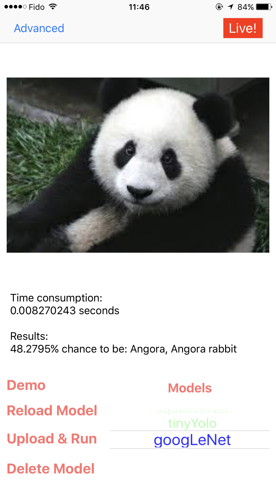
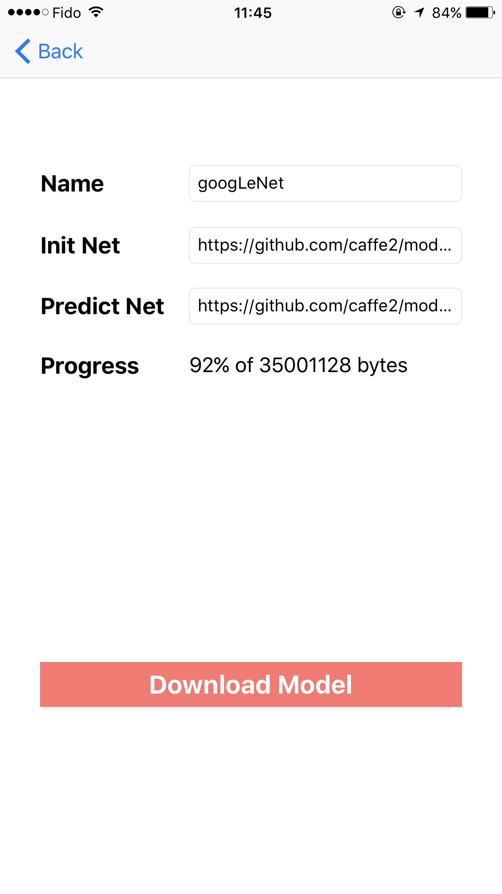
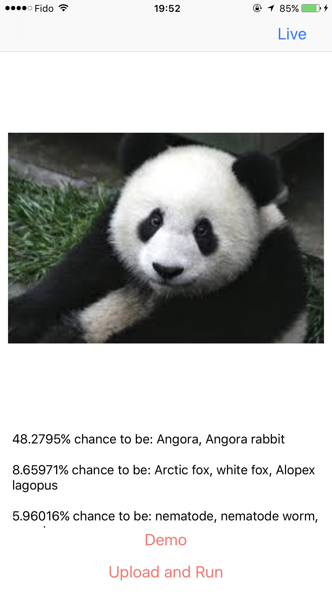

Slack Channel for Deep Learning Communication:
https://deep-learning-geeks-slack.herokuapp.com/
Caffe2-iOS
This is a project to demo how to use Caffe2/OpenCV 2 to build an iOS application doing real time object classification.
-
iOS (Swift/Objective-C/C++) with Caffe2
-
Test build in models (tinyYolo, SqueezeNet) with your own photo
-
Memory Consumption and Time Elapse Data
-
Live (Real Time) detection
-
Download your own model on the fly! And test it!
-
Manage models locally on your iPhone
-
Overall control on every layer (from beginger to expert)
-
Warm community and welcome to contribute
-
Star us if you like
Demo
If you are too lazy to build this repo, I also put this in App Store:
- If it navigates you to a different country's app store, you just search
Deep Learning Pro.
Wiki
Check our Wiki
Feel free to ask any questions from prepare environment to debug on Xcode and we are happy to help you.
For both Beginners and Experts
We provide two stable versions in here with:
- Exper stable version for experts to explore more possibilities
| Static Classifier | Real Time Classifier | Model Downloader |
|---|---|---|
|  |  |
 |
- Lite stable version for beginners to experience how the wrapper work and play with the demo
| Static Classifier | Real Time Classifier |
|---|---|
|  |  |
- Note that the number of FPS is subjective to the size you send to the device as well as type of the device. Those numbers were obtained with Height*Width = 227 * 227 on an iPhone 7 Plus.
Dependencies
You have to use a Mac with Xcode >= 8.0 (macOS Sierra) to keep going
LFS Clone
brew install git-lfs
git lfs install
git lfs clone https://github.com/KleinYuan/Caffe2-iOS
Step by Step Tutorial
-
Notice, after this commit, I put all large files in git LFS and make sure when you clone use lfs clone
-
Clone this repo into a folder, let's say
~/Desktop/, then you will have~/Desktop/Caffe2-iOSwhen clone is done -
Navigate to
~/Desktop/Caffe2-iOS/srcfolder and runbash ./setup.sh, which will automatically download and build iOS Caffe2 in a paralleled folder besides~/Desktop/Caffe2-iOS/src/caffe2-ioscalledcaffe2(it's important to make sure this step is done and it may take around 20-30 min to finish) -
When previous step is done, open
~/DesktopCaffe2-iOS/src/caffe2-ioswith Xcode (>8.0) -
Disable
Bitcodelike this -
(by default should be done) Adding
$(inherited) -force_load caffe2-ios/libCaffe2_CPU.atoBuild Settings/Linking/Other Linker Flags. For this issue -
Build with your iPhone plugged in
-
Open the app and press
Runto check the result of a pre-loaded image (cute Panda!) and pressliveto go to live mode
Validation and debug
There are some potential issues that you will have (I will keep adding if I sense some in issues):
Caffe2 iOS Build failed
1-a. Error Message 1: When build project in Xcode you see this error Cannot find caffe2/proto/caffe2.pb.h
1-b. Error Message 2: When running setup.sh you see this in terminal ${YOUR_PATH}/Caffe2-iOS/src/caffe2/third_party/protobuf/cmake: is a directory
-
Description: Those two are related and all because that you failed to build the caffe2 ios and check this folder architecture to validate your build (you should be able to see the
caffe2.pb.h) -
Debug and how to fix it: Mostly, the root cause is that your
cmakeis broken (not broken broken, more like configuration/path changed by other services/software) and you probably wanna runbrew install cmaketo reinstall it
{kind=link}
Load model failed or thread killed in the mid
-
Error Message:
Reading dangerously large protocol message. If the message turns out to be larger than 67108864 bytes, parsing will be halted for security reasons. To increase the limit (or to disable these warnings), see CodedInputStream::SetTotalBytesLimit() in google/protobuf/io/coded_stream.h. -
Description: As you can see in the caffe2 repo, that they reduced the protobuf, which is the tool they use to hanlde the communication down to version 3.1.0 and only have 64MB limit. Therefore, when you load a model larger than that, boooooomb, memory exploed and thread got killed.
-
Debug and how to fix it:
-
After you download and build the caffe2, hold on and modify something to increase the limit first
-
Find this file, which is the tool they use to hanlde the communication down to version 3.1.0 and only have 64MB and change the limit to whatever you want (also change the warning limit)
-
Then build caffe2-ios and Tada
-
Alternative method see here
-
Performance
The initial slope is for a static 4KB image, around 50 MB and Note that memory usage in live mode might not be the same as the one shown in Xcode (slightly different). And also, remember the memory data in the app is aggregated and therefore, if you are really interested in checking performance of a specific process, open Xcode :)
More Caffe2 Mobile Models
Check here
Future Work
We have a clear scope for this repo below: